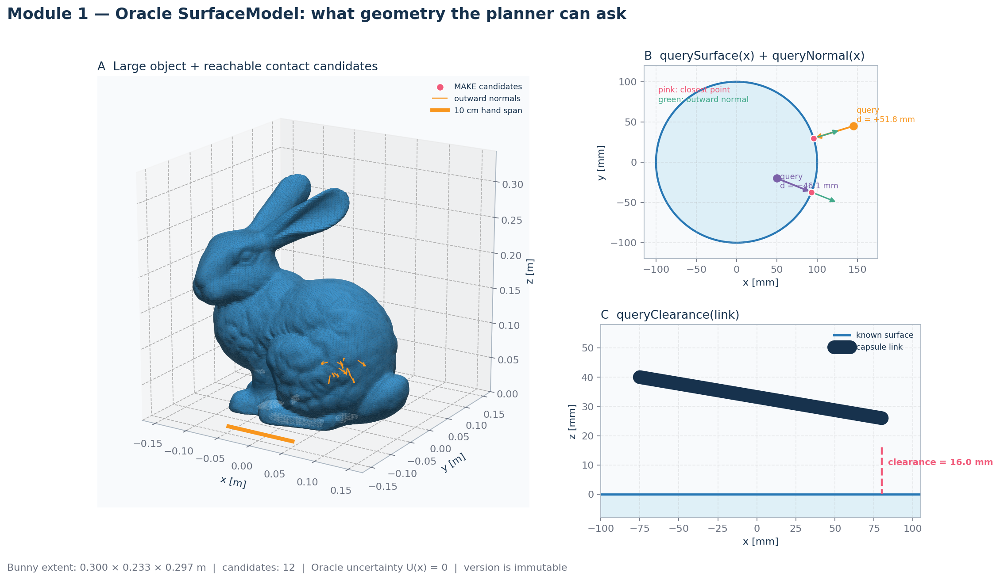
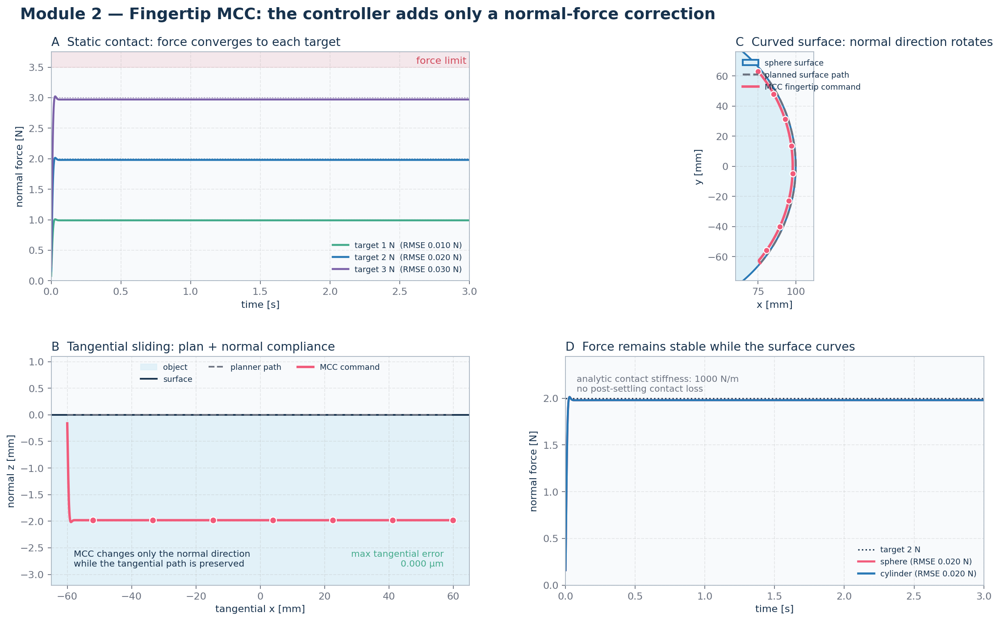
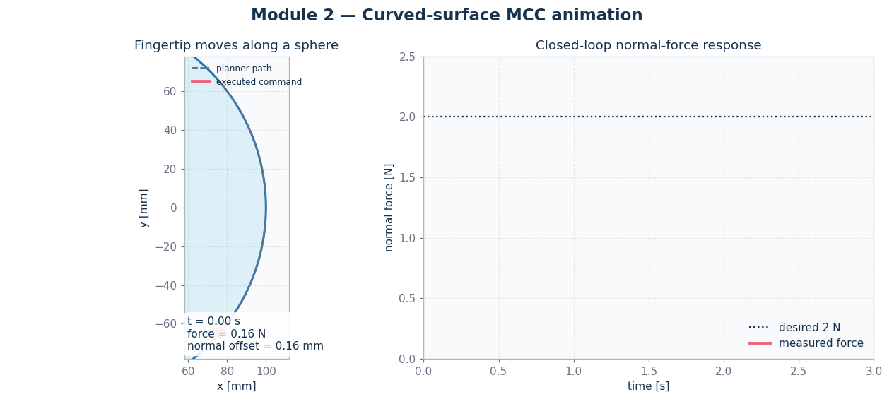
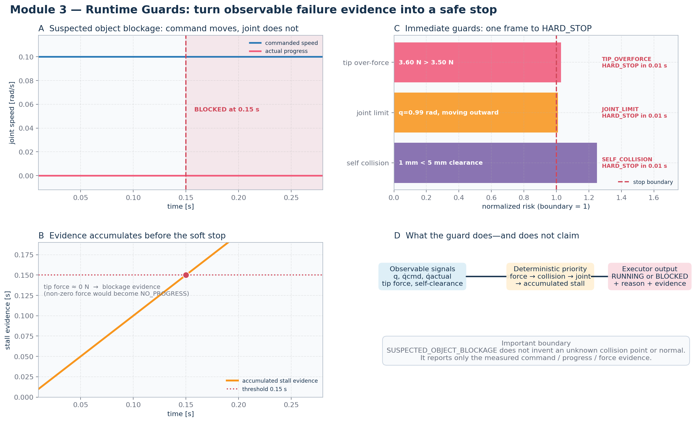

M0–M4、MCC 与 inverse-data 到底做了什么？
解析模块、23-DoF 物理机器人、中央掌心安装、当前 MCC，以及尚未训练 DP 之前的真实空间反演数据链放在同一页。
M0–M3 · FR3 + Leap Hand 适配
模型严格为 nq=nv=nu=23。本轮最终判据使用 central palm mesh site，而不是偏置 body origin；四个真实 contact geoms 都位于 distal fingertip belly。


Module 1 · Oracle SurfaceModel
粉色点是可供 MAKE 使用的接触候选，橙色箭头是物体外法向；右侧分别展示 point projection 与 capsule clearance。

Module 2 · Fingertip MCC
上图展示静态力跟踪、平面滑动和曲面接触；动画展示 fingertip 在球面运动时，法向如何旋转而 2 N 接触力仍保持稳定。


Module 3 · Runtime Guards
时间线直观显示 commanded motion 与 actual progress 分离后，stall evidence 累积并在 0.15 s 触发；过力、关节限位和已知自碰撞则一帧触发。

M04 / E05-F-MCC · 规定式 FR3 Wrist
Wrist MCC 关闭；FR3 跟踪同一 nominal palm trajectory，四个 Finger MCC 使用完整 local force error。
M04 / E05-H-MCC · 协调整手 MCC
FR3 joint-torque wrench estimate 驱动 resultant Wrist MCC；Finger MCC 只接 internal/differential error。视频来自正式 nominal trace。

M04-DP data · 真实 forward → spatial inverse → physical replay
左侧是 moving-object 的真实 forward physics；右侧是 fixed-object FR3+LEAP replay。时间不反转，finger command 原序逐样本复用，force/contact 在右侧重新测量，且 replay 没有 Finger IK/MCC/linear repair。

数据边界：raw replay mechanics 已通过，但 forward collector 使用 simulator Fingertip MCC，所以这里只是 Dataset-D pipeline diagnostic；正式 Dataset-I、DP training 与 E05-DP 仍不存在。
当前边界：这些是 gravity-off MuJoCo 动力学证据，不是硬件结果。MCC 使用 15 s shadow-guard characterization；DP 仍为 NOT_TRAINED / NOT_EVALUATED，本页新增的是数据链证据，不是策略性能。